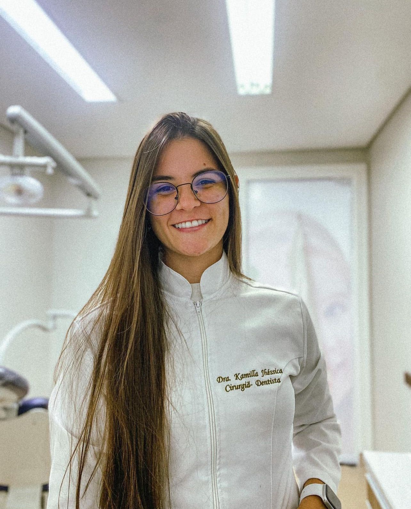

Experiência Profissional
Cargos
Jan/24 - Atualmente
Ortodontista
- Instalação e manutenção de aparelhos ortodônticos, seguindo os corretos procedimentos visando corrigir a posição dos dentes na arcada dentária.
Jan/24 - Atualmente
Cirurgiã-dentista Ortopedista e Ortodontista
-
Alinhamento e correção das posições dos dentes na arcada dentária com o uso de aparelhos, visando facilitar a mastigação, evitar desgaste e melhorar a aparência dos dentes.
- Acompanhamento e avaliação da evolução dos casos para realizar os devidos ajustes.
- Acompanhamento e avaliação da evolução dos casos para realizar os devidos ajustes.

Dez/22 - Atualmente
Cirurgiã-dentista Clínico Geral
- Atendimento clínico com destaque em Facetas em Resima Composta.
Jan/22 - Dez/23
Cirurgiã-dentista
- Atendimento clínico com destaque em Dentística Restauradora.
Nov/21 - Set/22
Cirurgiã-dentista
- Atendimento e orientação de pacientes próximos a executar procedimentos
odontológicos, aplicando medidas de prevenção e determinando prognósticos
sempre mantendo a comunicação com a equipe de profissionais.
- Realização de restaurações, limpezas, raspagens, exodontias e moldagens odontológicas, prezando um atendimento e acompanhamento de qualidade aos pacientes.
- Realização de restaurações, limpezas, raspagens, exodontias e moldagens odontológicas, prezando um atendimento e acompanhamento de qualidade aos pacientes.
Jun/21 - Nov/21
Cirurgiã-dentista
- Atendimento e orientação de pacientes próximos de executar procedimentos
odontológicos, aplicando medidas de prevenção e determinando prognósticos,
sempre mantendo a comunicação com a equipe de profissionais.
- Realização de restaurações, limpezas, raspagens, exodontias e próteses, garantindo um atendimento de qualidade e o acompanhamento dos pacientes.
- Realização de restaurações, limpezas, raspagens, exodontias e próteses, garantindo um atendimento de qualidade e o acompanhamento dos pacientes.
Formação Acadêmica
ESPECIALIZAÇÃO
Status: Cursando
Hodos Odontologia
- Especialização em Ortodontia pela Rede HPG de Pós-Graduação em Odontologia, referência na área tendo iniciado suas atividades em 2004.
BACHARELADO
Status: Formada
Centro Universitário UDF
- Graduação em Odontologia pelo Centro Universitário UDF, referência em ensino superior no Distrito Federal tendo iniciado suas atividades em 1967.
Habilidades Profissionais
Prioridade:
Facetas
Ortodontia
Bem desenvolvidas:
Restaurações
Clareamento
Limpeza
Prótese
Cirurgias